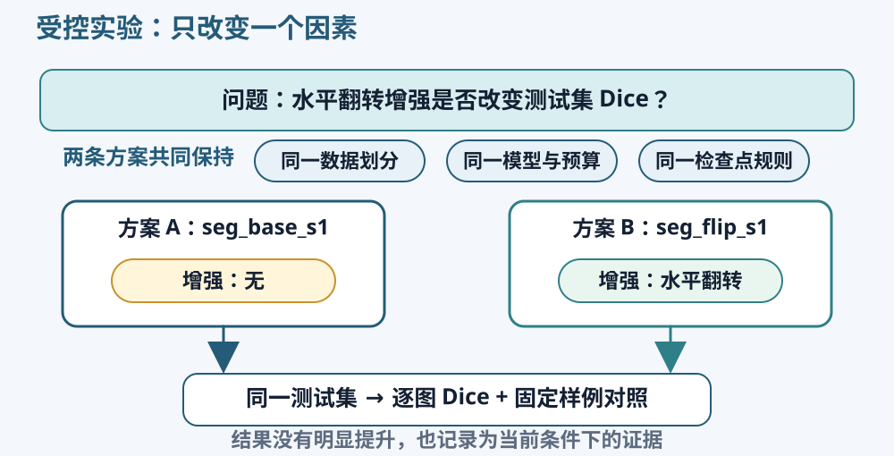
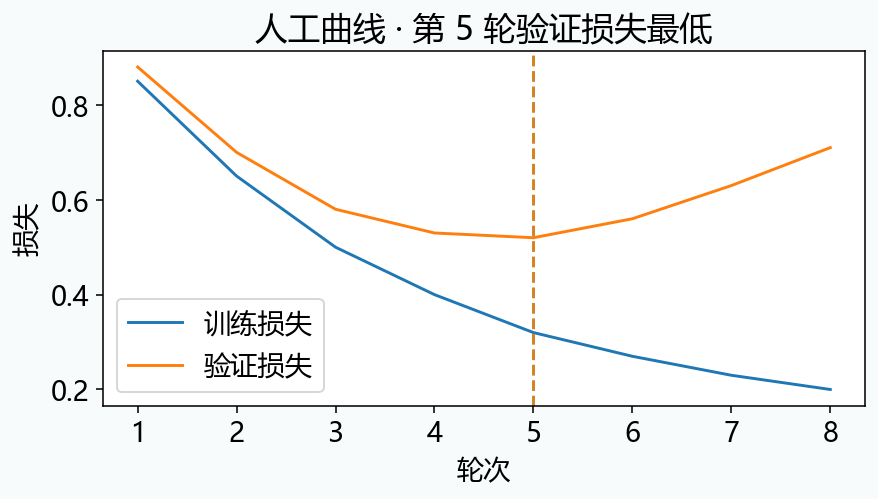
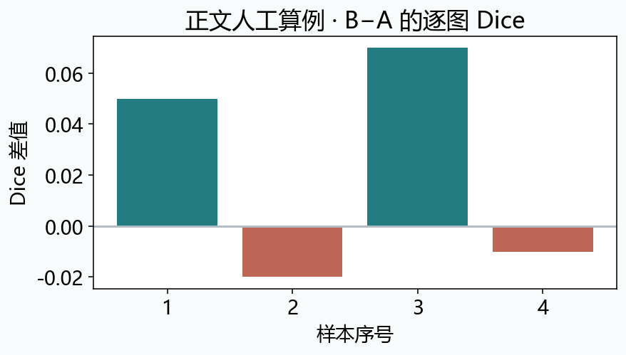
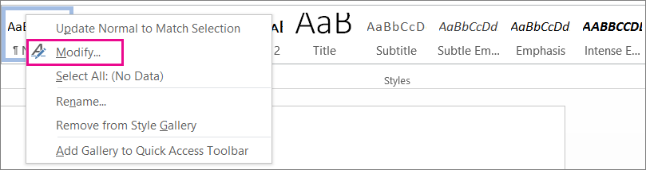
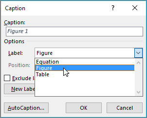
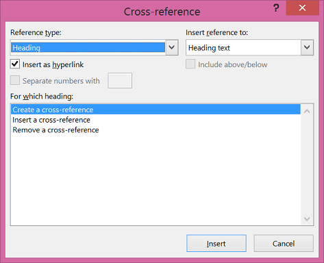
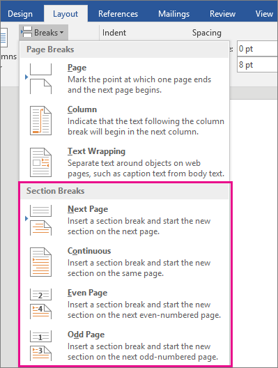
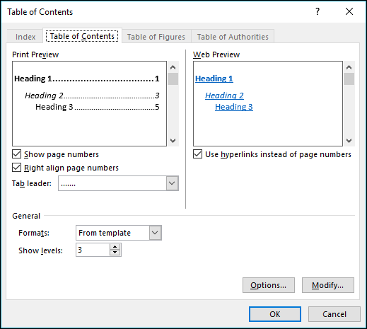
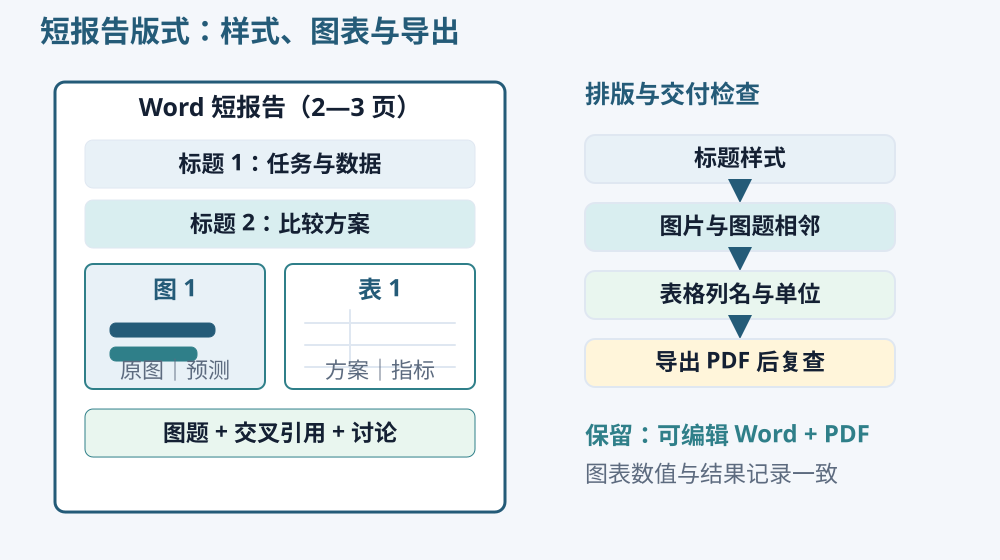
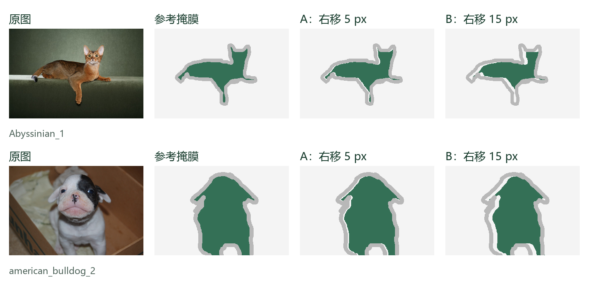

实验设计与记录
水平翻转增强可能改善分割，也可能没有明显帮助。两次实验使用相同数据、网络和训练预算，只改变是否翻转，结果差异才便于解释；同时改变多项设置，会让变化来源难以区分。
实验问题与比较条件
假如我们想知道水平翻转是否有用，就给一组训练增加翻转，另一组保留原设置。两组若还换了图片尺寸或训练轮次，最后的变化就难以归因。 先写出准备改变的因素，再列出需要保持一致的条件。比较学习率时，模型、初始参数、数据划分、批量大小和训练预算应尽可能一致。比较不同模型时，至少保持数据、评价方法和训练预算的说明一致，并报告参数量或计算差异。

不要根据最终结果再改写最初的问题。结果没有明显提升也有价值：它说明在当前数据与训练条件下，这项变化尚未显示清楚优势。记录失败或不稳定的实验，可以避免以后重复投入同样的时间。
种子、划分与实验编号
网络刚建立时的权重是初始化参数；随机种子 SEED 固定随机数的起点，让两种方案能从相同权重和划分开始。项目函数 run_experiment 在每个方案开头重新设置种子，随后建立模型。训练预算由图片尺寸 SIZE、批量 BATCH 与轮数 EPOCHS 等共同决定。
这些设置集中在 Notebook 开头。A 的翻转概率是 0，B 是 0.5：后者表示每张训练图有一半机会水平翻转，照片与标注共享同一次决定。比较时保持其余设置一致，才容易解释翻转带来的差异。
每次实验使用独立编号，例如 seg_base_s1 和 seg_flip_s1。记录输入尺寸、训练预算、增强、损失、优化器、学习率与种子。下一次改变设置时使用新目录，不覆盖前一次的权重和曲线。具备计算条件时，可使用几个种子重复比较；暂时只有单次结果时，直接说明运行次数。
训练曲线与检查点
训练损失一轮轮下降时，先把验证曲线放到旁边看。有时两条曲线在后半段分开，此时继续训练未必能改善新样本。 训练损失下降说明模型更适合当前训练目标。验证指标反映对未参与更新的图像的表现。若训练继续改善而验证逐渐变差，可能存在过拟合，需要结合数据量、增强和模型复杂度分析。
本项目使用验证损失最低的一轮权重。训练循环把它保存为 best.pt；测试评价重新读入这份文件，而不是直接使用最后一轮参数。曲线中的 train_loss 与 val_loss 分别是训练和验证损失，横轴 epoch 为轮次。Dice 是测试评价指标，本次不用它选择权重。


结果比较与图表
同一批测试图像上的平均指标反映整体表现，逐图差值显示哪些样本改善、哪些退步。报告中的判断需要同时对应具体数字和图像。
均值、差异与样例
两组实验都得到一个平均 Dice 后，我们还可以把相同照片放在同一行，查看每张图到底增加还是减少了多少。 在固定测试集上比较两种方案，可以逐图计算 Dice，再查看同一张图上的差值。均值反映总体水平，分布和具体图像说明变化是否集中在少数困难样例。只看一个平均数容易忽略某种方案改善大目标却伤害细小结构的情况。
若运行多个随机种子，可以分别报告各次指标与均值、标准差。图像级样本数量和独立实验次数是两种不同数量，不能把许多相关像素当成大量独立重复实验。小型课程实验通常先做清楚的描述比较，不强行加入缺少前提的显著性结论。
同一样本的配对比较
下面四个样本中，B 有两张得分上升、两张下降。逐行差值保留了这种区别，平均值的上升并不意味着每张图都改善。 下表列出四个样本的 Dice 人工算例，用于说明汇总方式。A、B 两种设置在同一行对应同一个样本，配对差值由这一行的两个数相减得到。实际报告中的数值需要由自己的测试结果产生。
| 图像编号 | 方案 A | 方案 B | B − A |
|---|---|---|---|
| sample_01 | 0.61 | 0.66 | +0.05 |
| sample_02 | 0.77 | 0.75 | −0.02 |
| sample_03 | 0.52 | 0.59 | +0.07 |
| sample_04 | 0.84 | 0.83 | −0.01 |
| 均值 | 0.6850 | 0.7075 | +0.0225 |
B 的平均 Dice 增加 0.0225，即按百分数表示时增加 2.25 个百分点，但有两张图的分数下降。相对 A 均值的增幅约为 3.28%，它与“增加 2.25 个百分点”是不同表达。报告先写原始指标与差值，再结合具体图像说明哪些位置有变化，不将平均提升写成每张图都改善。
把逐图差值画成点图时，以 0 为参考线；点在上方表示 B 较高，下方表示 A 较高。对照图应包含改善、接近和退步的例子，并保留固定展示样本。这样读者既能看到总体分布，也能查看具体耳朵、毛发或背景区域。


波动与重复实验
四张图的得分散开，可能是因为图像难度不同；同一设置重复训练的均值散开，则涉及训练波动。两种“分散”统计的对象不同。 标准差描述一组结果围绕均值的分散程度。逐图 Dice 的标准差主要体现图像难度与预测表现的差异，多次独立训练所得测试均值的标准差则描述训练重复的波动。它们来自不同层级，表格中要写清统计的是图像还是实验。
比较多个随机种子时，将同一组种子用于两种设置，逐次保留结果，并同时报告每次训练的数据划分与预算。一次训练中的上千张图并不等于上千次独立训练。若下一步需要置信区间或统计检验，还要明确抽样单位、同来源样本之间的关系，以及检验假设；当前练习先把逐图差异和重复次数交代清楚。
图表与结果说明
读者看到一条绿色曲线或一张分割图时，需要知道颜色对应哪个方案、样本来自哪里。图注和正文负责把这些视觉对象指向具体证据。 结果表至少写出方案、唯一改变项、训练预算、测试图像数和指标。图像对照采用相同样例与顺序；颜色表示应保持一致。若图中有忽略区，图注说明颜色含义与评价时的处理方式。
图注应让读者知道数据是什么、比较了什么、颜色或符号是什么意思。正文指出图中的具体证据，例如“方案 B 在这个耳朵区域少漏了一块”，再说明它是否在更多样例中重复出现。不要让“效果更好”成为结果部分的全部内容。
Word 图文排版实践
一份图像分割报告应让读者找到比较问题、实验条件、结果和解释。Word 的样式负责统一文字层级，表格承载指标，题注与交叉引用把正文和图片连接起来。
下方给定的掩膜错位实验可用于排版练习。标准答案完整写出该实验；代码实践项目报告沿用相同结构，改写为自己的模型、训练设置与真实结果。
页面与统一格式
- 在“布局 → 纸张大小”选择 A4，在“页边距 → 自定义页边距”把上、下、左、右设为 2.5 cm。
- 在“开始 → 样式”右键“正文”，选择“修改”。字体设为微软雅黑 11 pt，颜色为深灰或黑色。
- 在该对话框左下角的“格式 → 段落”设置 1.25 倍行距，段前 0、段后 6 pt。正文段落不靠空行拉开距离。
- 修改“标题 1”为微软雅黑 14 pt、加粗；报告题目应用“标题”样式并设为 20 pt。题注样式设为 10 pt。
- 通过“插入 → 页码”在页脚插入页码。检查正文宽度是否足以容纳对照图和结果表。
正文、题注和表格内文字可能分别使用不同样式。修改正文样式后，检查表格和题注是否也采用了指定字体。打开“视图 → 导航窗格”，报告的四个一级标题应在同一层级。
报告每一部分写什么
| 部分 | 需要写清楚的内容 | 可用的句子形式 |
|---|---|---|
| 任务与数据 | 比较问题、数据来源、样本量和标签含义 | 本实验比较……，使用……幅图像，前景定义为……。 |
| 方法 | 共同设置、唯一改变项、指标计算方式 | A 与 B 使用相同……，仅将……由……改为……。 |
| 结果 | 数值、差值以及对应的图表 | A 的平均 Dice 为……，B 为……；图 1 中……。 |
| 讨论 | 由结果支持的解释、尚未验证的问题 | 在这组图像中……。进一步比较……可以检验……。 |
结果段只描述已经得到的观察。把“模型显著提升了性能”改成实际指标与实验条件；只有进行了相应统计检验，才写统计意义上的“显著”。讨论中的原因如果只是猜测，要与观察分开。
完整建立一处图表引用
- 在正文说明实验结果后插入对照图，图片布局选“嵌入型”，锁定纵横比，宽度不超过正文的 16 cm。
- 选中图片，在“引用 → 插入题注”中建立标签“图”。保留自动编号，后面写图片内容、列顺序、颜色含义和数据来源。
- 把光标放在正文引用位置，在“引用 → 交叉引用”中选择“图”，插入“仅标签和编号”。
- 图片所在段落设置“与下段同页”，题注段落不强制与下一段同页。这样图与题注一起排版，不会把后面所有内容连成一块。
- 表格使用原生单元格；表题放在表格上方。指标列保留相同小数位，在表注或方法中说明平均方式。
- 保存前按 Ctrl+A、F9 更新域。若看见 SEQ 或 REF 代码，按 Alt+F9 恢复显示结果。
标题样式与导航窗格
报告写到几页以后，读者需要快速找到方法和结果。让 Word 识别哪些段落是标题，导航与统一格式才有可靠的依据。 “样式”把段落的用途和外观一起保存。给“实验方法”套用标题 1，Word 才能把它识别为一级标题；仅将几个字放大、加粗，通常仍是普通正文。这样建立的层级可以用于导航窗格、目录和统一改版。
- 新建文档，先输入报告题目和四个部分的名称。在“开始 / Home → 样式 / Styles”中，给报告题目应用“标题”，给四个部分应用“标题 1”。某部分下面确有子主题时再用“标题 2”。
- 选中普通段落，应用“正文 / Normal”。右键正文样式选择“修改 / Modify”，统一字体、字号和段后间距。本任务用微软雅黑 11 磅、1.25 倍行距、段后 6 磅。
- 通过“视图 / View → 导航窗格 / Navigation Pane”查看标题。点击“结果”，检查是否能直接定位；正文如果误入导航列表，检查是否套用了标题样式。
- 修改“标题 1”的颜色或字号，观察所有同级标题一起变化。不要逐个重新设置外观，否则下次调整仍要重复操作。

就地练习： 把“比较方案”细分成“共同设置”和“改变因素”两个二级标题。观察导航中的缩进层级，再只修改一次“标题 2”样式。保存文档后重新打开，确认结构仍然存在。
图片、题注与正文引用
正文说“见图 2”时，图片必须有一个稳定、可更新的编号。插入新图后，题注和交叉引用可以一起调整，减少手动改漏的情况。 插入图片后，Word 需要决定它与文字的位置关系。嵌入型图片像一个较大的字符，随所在段落移动；浮动图片则具有环绕方式、锚点和位置设置。短报告先用嵌入型，通常更容易维护图与题注的顺序。
- 将光标放到介绍该图的段落后，使用“插入 → 图片”选择自己导出的分割对照图。优先插入原始图片文件，避免反复经过聊天软件压缩。
- 在图片旁的“布局选项 / Layout Options”选择“嵌入型 / In Line with Text”。进入图片的大小设置，保持纵横比，按页面正文宽度缩放。宽度不够时调整图的内部排版，不把图横向压扁。
- 选中图片，使用“引用 / References → 插入题注 / Insert Caption”。标签选择“图”，位置放在所选项目下方，填写能说明数据、方案与颜色含义的图注。
- 在正文需要提到图片的位置，使用“引用 → 交叉引用 / Cross-reference”，引用类型选“图”，插入“仅标签和编号”。之后插入新图或调整顺序，再更新域，引用编号就能一起更新。

手工输入“图 1”属于普通文字，自动题注的编号属于可更新的域。做一个小实验：先在原图之前插入一张临时图片和题注，再在正文区域按 Ctrl+A、F9 更新域，观察原图与交叉引用编号的变化。确认后删除临时图及其题注，再次更新。笔记本电脑可能需要配合 Fn 使用 F9。

上图展示同一个交叉引用对话框引用标题时的状态。引用报告中的图片时，将“引用类型 / Reference type”改为“图 / Figure”，右侧选择“仅标签和编号 / Only label and number”，再从下方列表选中自己的题注。如果列表为空，先确认图片已经通过“插入题注”建立编号。
表格、单位与有效数字
同一列里有的写 0.7、有的写 0.703482，会让结果难以比较。同一指标使用相同单位和小数位，读者更容易比较方案差异。 结果表的第一列写方案名称，后面放唯一改变项、样本数、Dice 和 IoU。指标计算方式写在表格旁或表注中，例如“先逐图计算，再对测试图像取均值；待定边界像素不参与评价”。数值列保留一致的小数位，不通过增加位数暗示更高的测量精度。
通过“插入 → 表格”创建表格，在“表格布局”中调整列宽与单元格对齐。段落中的空格和制表符不适合代替表格结构。长单元格可自然换行；数值列应有足够宽度，避免一个数被拆成两行。先将同一方案的图片、表格和正文名称统一，再调整边框和颜色。
如果表格跨页，选中表头行，通过“表格布局 → 重复标题行”让下一页也显示列名。在“表格属性 → 行”中检查是否允许跨页断行；一个短记录通常适合放在同一页，一整张长表则不必强行挤进一页。表格完成后，用自动题注添加“表”编号。
较长文档可用：段落分页与分节
段落分页与分节
前文增加一段后，原来用空行推到下一页的标题可能跑回来了。分页符和段落设置记录真正的位置要求，分节则用于改变某段页面设置。 在“开始”中显示段落标记 ¶，可以看到回车、分页符等隐藏格式。连续敲很多次回车只能把后面的内容暂时推下去，一旦前文增加一句话，空白和分页就可能改变。
想让一个新部分从下一页开始时，使用 Ctrl+Enter 插入分页符。想让短标题跟随后面的正文时，在“段落 → 换行和分页”中启用“与下段同页 / Keep with next”。图片所在段落也可以与下一段题注保持同页；随后检查是否出现过大的空白，必要时缩小图片或改变图的位置。

分页符只安排新页；分节符还允许前后部分使用不同的页面设置。长报告若需要某一页横向放置宽表，可以在它前后插入“布局 → 分隔符 → 下一页分节符”，再仅改变当前节的纸张方向。修改页眉或页码时，注意“链接到前一节”的状态。两三页的分割短报告通常用不到复杂分节，可以在另一份练习文档里尝试，观察差别后再决定是否使用。
较长文档可用：自动目录
自动目录
DOCX 中的布局完成以后，还要看别人实际打开的 PDF。目录读取标题层级；导出文件则要重新核对图片、表格和编号。 报告扩展到更多页面后，可以在正文前通过“引用 → 目录 / Table of Contents”插入自动目录。它读取已经设置的标题样式。新增标题或更换页面位置后，右键目录选择“更新域”，需要更新标题文字时选择“更新整个目录”。本次短报告可以直接使用导航窗格，无须额外占一页放目录。

保存可编辑 DOCX，再通过“文件 → 导出”或“另存为”生成 PDF。导出后重新打开 PDF，重点检查图中文字能否读清、题注是否跟随图片、表格是否断裂、引用编号是否一致。Word 中正常显示的内容，仍应在最终阅读文件里核对一次。
本次实践产物： 一份含实际分割结果的 DOCX 和 PDF。正文具有标题样式，至少一张图具有自动题注和正文交叉引用，结果表列名与单位完整。用这些功能把自己的实验说明清楚即可，排版功能应服务于阅读。

任务：一份完整分割报告
下方标准参考使用四幅宠物标注构造错位结果：A 向右平移 5 像素，B 平移 15 像素，两者都忽略原值为 3 的位置。它演示报告怎样排版和说明结果，未训练模型。你最终只交一份分割报告：沿用下面的格式，把演示数据替换为自己代码项目的 A/B 实测结果。
报告中的方法说明对应自己的翻转比较；结果表取自 A/B 的 metrics.csv，配图取自同一测试样本的输出。原始演示数值留在参考答案里，最终报告不把它们混入模型结果。
| 项目 | 明确要求 |
|---|---|
| 篇幅与结构 | 2—3 页 A4，包含题目、任务与数据、方法、结果、讨论和数据出处。无需封面与目录。 |
| 方法 | 写明四个样本、原始尺寸不变、前景与忽略区定义、唯一改变项；解释 Dice / IoU 逐图计算再平均。 |
| 结果 | 插入 A / B 两行结果表，列出图像数、Dice、IoU，指标保留 3 位小数；正文给出一项数值差异。 |
| 配图 | 至少两个样本，按原图 / 参考掩膜 / A / B 排列，统一方向与比例；图注解释颜色和教学构造。 |
| Word 功能 | 使用标题样式、原生表格、自动图表题注、至少一处正文交叉引用与页码；图片和题注同页。 |
| 格式 | 四周页边距 2.5 cm；正文微软雅黑 11 pt、1.25 倍行距、段后 6 pt；题目 20 pt，一级标题 14 pt，题注 10 pt。 |
| 提交 | 姓名_图像分割_报告.docx 及同名 PDF，放入 02_图像分割 文件夹。代码实践报告替换为自己两种方案的实测结果。 |
完整标准答案包含写好的正文、结果表、对照图、自动编号和交叉引用。注释版保留完整报告，在后面解释样式、分页、图表格式、实验文字及修改方法。

代码实践项目：图像分割
项目 Notebook 提供照片与掩膜检查、同步变换、分割网络、训练与逐图评价。补全指定代码，并在同一数据划分下比较两种只差一项设置的方案。
完成一份 2—3 页 Word 报告，图表来自自己的实验。任务要求、完整答案与注释版集中在上方。
点击 Copy & Edit 保存自己的副本。Notebook 中的 ... 是待填位置；修改后运行所在代码块。前两个项目的标准答案链接放在各自 Notebook 的最后，供完成后对照。